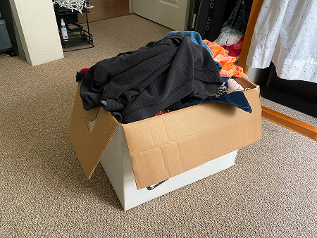
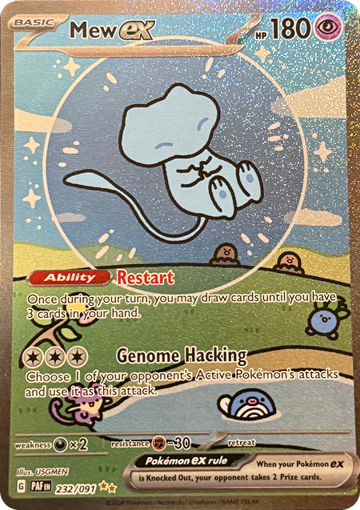

Learning Journal 4
Tegan’s image is about her obsessions. Pictured is a cardboard box of clothes, which represents her obsession with clothing. It is obviously a picture of a box of clothes at first glance, but the mystery is the importance of the image. What is important about it? The clothes? The room? The box? Perhaps she’s moving out? There’s some context that a user needs before they can unpack the meaning of the picture, which I think is especially interesting. Some suggestions I would have would be to take perhaps a picture where the clothes are more centered and in focus, without the distractions of the closet behind the box.

My image is of a Pokemon card, specifically the Secret Illustration Rare Mew from Paldean Fates. I think this image is interesting because the card represents a blue version of Mew, which is traditionally a pink pokemon. It relates to my collection because I want my Every Picture project to be my Pokemon cards and the stories of how I collected them. My pokemon collection tells a story about my passion of collecting and playing Pokemon, as well as how I’ve built my collection and the challenges it took to get these cards. To make the images more compelling, I think I may scan them using my notes app on my phone, that way it’ll be a much more defined image of the card.

Learning Journal 4
I read the Medium Article called Game Design Best UX Practices.
My biggest takeaway is that good design is useless if the code behind it is a mess. I used to think UX was just about making things look cool, but now I see it is really about the skeleton of the site. If the HTML isn't structured correctly, the whole experience falls apart for the user. We are learning that the way we write our code is actually the first step in making sure a site is easy to navigate and feels intuitive.
Another thing that really hit home is how important accessibility is from the very start. It is not just a final check you do at the end of a project. If we do not use the right tags for buttons or headers, people using screen readers are completely left out. It made me realize that a UX coder's job is to be an advocate for every single person who might visit the site. We have to make sure our code is clean and logical so that the technology works for everyone regardless of how they are accessing it.
link to the article:
Click Here
Learning Journal 3
The NYT article "10 Intriguing Photographs to Teach Close Reading and Visual Thinking Skills" shows that visual thinking is really just about slowing down to notice details we usually scroll past. It is like being a detective; you go looking for clues in a photo to figure out a story.
I found a page called "Species in Pieces" on Awwwards. It features 30 endangered animals made of moving geometric elements.
Strengths: When you switch animals, the shards break apart and reassemble. The site interaction is really cool and the animation is smooth.
Drawbacks: Although it's visually appealing, it doesn't seem to convey that much of a story. Also, the visuals are so distracting that I spent more time watching the triangles move than actually learning about the animals. Sometimes the stylistic choices buries the info.
link to the NYT article:
Click Here
Link to the Awwwards page:
Click Here
Learning Journal 2
I read about the overuse of overlays by the Nielsen Norman Group. Overuse of overlays covers how lightboxes and modals are often used wrong in modern web design, which leads to poor user experiences. The main takeaway is that even though overlays can preserve context, they cause issues on mobile devices and create accessibility barriers for those using screen magnifiers.
The article talks about the "five W’s" to help designers evaluate if an overlay is necessary. It highlights how if a lightbox requires complex navigation or extensive scrolling, it should just be replaced with a standard standalone page. The author also talks about how non-user-initiated overlays, like newsletter signups or chat prompts can interrupt tasks and can lower conversion rates.
Learning Journal 1
Medium’s 20 best practices for form design was incredibly informative and I learned a great amount of tips on how to design a form with users in mind. I found it interesting that it’s best practice to complete a form top-down, and I never really gave it thought as to why, but it makes sense, as most users want a linear form experience, and to feel like they are progressing through a form. I also thought that it was interesting to ask the easy questions first, so they’ll feel more committed. I always thought of asking the easy questions first as more of a momentum thing, like making your bed in the morning; it helps people gain momentum so that the rest of the things they do feel more rewarding. In general, there were a lot of topics covered that I haven’t given much thought when referring to forms. Here's the link to the original article. A website form I’ve interacted with that has great form practices is this portfolio site. It has interesting interaction design and the form is straightforward and simple to fill out. I found that having an interactive site was really engaging and made filling out a form more fun.